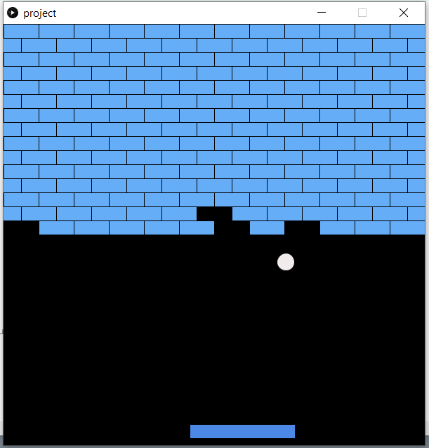
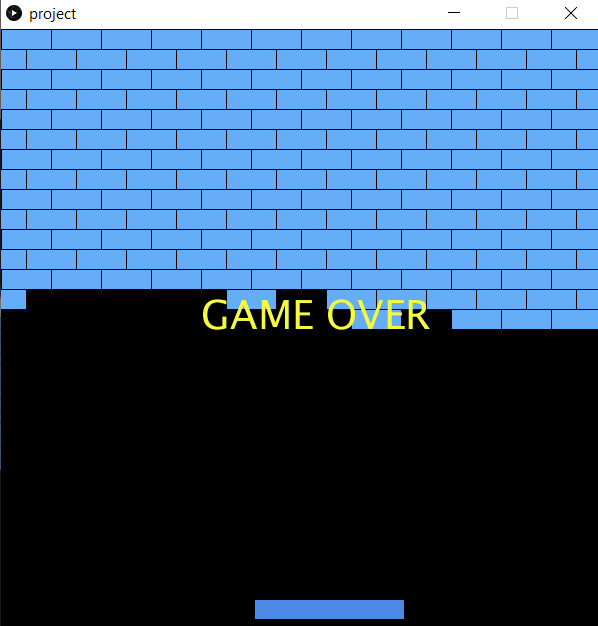
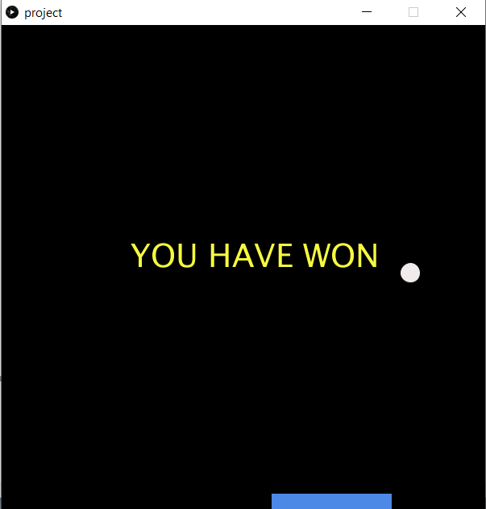

Mohammed Jayed HussainI first started to program during year 7. At first, python was difficult to use so it took a while to get used to it. I only used to program during lesson time so I didnt learn much till the NEA project at year 11 and learnt more during A Levels. Programming was the enjoyable part of computer science for me so I decided to do that for a course in Uni. |
||
|
|
||
Bootcamp 2020: BrickbreakerTO finish off the bootcamp, I went with a widely known game for the project, It consists of 3 classes which are paddle, ball, and bricks. It has an array to allow bricks to be removed from the screen. It also has an end screen for if u have won or lost. Check out the code on Github: shadowreaper7890.github.io | ||
|    | ||